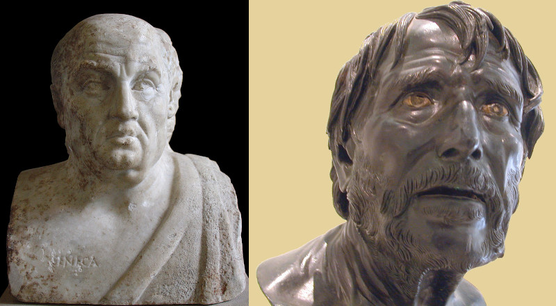

Lucius Annaeus Seneca
The two lives of a Stoic sage
If you like reading about philosophy, here's a free, weekly newsletter with articles just like this one: Send it to me!
The Two Senecas
Seneca (4 BC–65 AD) is perhaps the most complex and confusing of the ancient Stoic philosophers. Not only were there two people of the same name, Seneca the Elder (the father of the philosopher, himself a writer and politician) and Seneca the Younger (the one we are talking about); but Seneca the Younger himself often seems to be a composite of a number of entirely different personalities.
Look at these two. The first one, on the left, is a picture of what Seneca (the Younger, the Stoic philosopher) might actually have looked like.

Left image by I, Calidius, CC BY-SA 3.0, https://commons.wikimedia.org/w/index.php?curid=2456052
The second image, on the right, is sometimes thought to depict Seneca, but probably doesn’t. It is known as an image of “pseudo-Seneca.”
I’ve always thought that these two busts beautifully capture the different faces of Seneca. The second, good-looking, tortured one, as the image he might have had of himself: the troubled philosopher, suffering, but always keeping his eyes firmly fixed on the better life. The first one, a conservative and sometimes shifty old man, well-fed, comfortable in his privileged life: the man that others might have seen when they looked at him.
The two faces of the philosopher. They also show, I think, something else that is true for all writing and art: that we cannot judge the work by judging the creator’s life. Despite all the talk of authenticity nowadays, many great and enduring works of art, many of the greatest acts of charity and self-sacrifice, many political feats that crushed empires were performed by rather small-minded, mean-spirited, unwholesome men and women: people one wouldn’t like to meet socially.

A ‘Stoic’ attitude to life aims to achieve lasting happiness by staying calm, rational and emotionally detached, while cultivating one’s virtues.
Seneca’s life
Lucius Annaeus Seneca the Younger was born 4 BC in Cordoba, in what today is Spain, but moved to Rome as a small child and grew up to be a model Roman citizen of his time. His father was already a famous writer and teacher of rhetoric and little Seneca grew up in this wealthy family, himself destined to later find his role among the aristocracy of Rome. When Seneca developed breathing difficulties (probably some form of asthma) he was sent across the Mediterranean to stay with an uncle who was then the Prefect of Egypt. The Senecas were not people to count pennies.
When Seneca returned to Rome after a few years, he immediately got into trouble. Emperor Caligula was so offended by Seneca’s speeches in the Senate that he ordered him to commit suicide — but Seneca looked so frail and ill already, that the Emperor didn’t insist. If Seneca died from natural causes, so much the better.

Seneca didn’t die. Instead, Caligula was assassinated and Claudius became emperor, who was a little bit more friendly towards the philosopher. When, soon later, Seneca was accused of adultery with Caligula’s sister and sentenced to death by the Senate, the emperor changed the sentence to exile. Seneca went for eight years to warm, sunny Corsica, where he wrote two of his famous letters, the Consolation to Helvia and the Consolation to Polybius. Through flattery in these works, Seneca tried to get the emperor to change his mind. But his exile was only cut short when the new wife of Claudius, Caligula’s sister, who was friendly to Seneca, arranged for him to return from Corsica.
Suddenly, the exiled enemy of the state became a tutor to the next emperor, Agrippina’s son Nero. And here things turn dark. Seneca wrote the new emperor’s speeches, and he defended Nero when the emperor started killing off his opponents, including 14-year old Britannicus, the child of Claudius, whom Nero had poisoned. A few years later, Nero killed his own mother, Agrippina, the one who had used her influence to get Seneca back from exile. But the philosopher now was firmly on the side of the new emperor and he wrote a letter justifying the murder to the Senate.
Seneca was attacked from many sides and he found himself again and again in the middle of allegations of corruption, of sexual relations with Agrippina, and of trying to squeeze money out of people he had given loans to. But he was by now beyond caring. Seneca had become immensely rich, owning estates all across the Mediterranean. He even lent money to the British aristocracy and caused an uprising when he suddenly demanded that they pay back the loans.
Live Happier with Aristotle: Inspiration and Workbook (Daily Philosophy Guides to Happiness).
In this book, philosophy professor, founder and editor of the Daily Philosophy web magazine, Dr Andreas Matthias takes us all the way back to the ancient Greek philosopher Aristotle in the search for wisdom and guidance on how we can live better, happier and more satisfying lives today.
Get it now on Amazon! Click here!

Slowly but inevitably, the rich philosopher at the heart of the Roman web of power became inconvenient to the emperor. When Nero learned of a conspiracy to kill him, he quickly got rid of everyone whom he suspected of having collaborated with the conspirators — and Seneca was one of those Nero wanted gone. In an echo of Seneca’s very first contact with Roman politics, the emperor Nero ordered the ageing philosopher to take his own life. This time, there was no one alive to defend him, no one to take his side or protect him from the emperor’s wrath.
In 65 AD, Seneca took his life, which he did rather clumsily and with a lot more blood and suffering than would have been necessary. And thus ended the life of this most ambiguous, most glittering figure of ancient philosophy: the Stoic who wrote about human suffering from within his shining banqueting halls, the tutor who may have conspired to kill his student, the man who was caught in the web of sex and betrayal that was Roman politics of the time, the exiled criminal who spent a decade enjoying his riches on a sunny island, all the time writing letters in which he tried to console himself for the cruelty of life.

April 26, 121 AD marks the birthday of Roman Emperor and Stoic philosopher Marcus Aurelius, who still inspires us today with his sense of humility and duty.
The man and the sage
Today we’re often quick to judge others. Can Seneca even mean anything of what he wrote? Can you be rich and a Stoic, can you be privileged and authentic, or is Seneca only appropriating the tropes of suffering in order to create a flattering public image for himself and to boost his literary career? If there is whitewashing and greenwashing, can we accuse Seneca of “sufferingwashing” or “Stoicwashing” his own life, of posing and posturing rather than actually being the man the work suggests?
Our culture is afraid of contradictions in human personalities, it demands simplicity and authenticity. But life is not a James Bond movie, in which heroes and villains sit on different benches. Seneca, while being the well-fed, complacent man in the first picture above, was also the philosopher struggling to make sense of his own life, incessantly criticising himself with every sentence he wrote. There was always that other person, the one of the second bust, hidden inside the first. It was that second Seneca, the Stoic one, who wrote of the first:
In the last years of his life, Seneca tried to withdraw to the countryside and lead a quiet life among his books and writings. But Nero didn’t leave him alone. Afraid perhaps to rule without the moral support of the man who had raised and advised him since he was a child, the emperor kept calling Seneca back — until that day when it all finally became too much for them both.
One feels that perhaps Seneca, at that point, might have welcomed the death sentence. Realising, like Socrates, that it was worth sacrificing his mortal body for his eternal image, or finally fed up with having to justify his own life and choices to himself in the elaborate Latin phrases of his work, death must have appealed to the inner Seneca. One moment of suffering and he would finally be free to become the philosopher who he always had longed to be but never was.
It must have been at such a moment of clarity that Seneca wrote down the words:
Seneca wrote this book, De Brevitate Vitae (“On the Shortness of Life”) in 49 AD, around the middle of his life. Perhaps by this point he was still hoping to find the time, in the second half of it, to really learn how to live. Realising the difficulty of the task, he added:
Your ad-blocker ate the form? Just click here to subscribe!